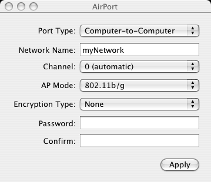

IPNetRouterX allows you to configure your computer as an AirPort software base station or gateway using the AirPort configuration tool.
For the purpose of Internet sharing, AirPort is treated like any other data link provider and is very similar to Ethernet. To create a software base station you need to set the operating mode of the radio in the AirPort card itself. It is helpful to configure the AirPort data link before trying to set up Internet sharing because it may change the IP address of this interface.
Notice the radio used for AirPort can operate in one of three modes:
The AirPort configuration tool allows you to select the desired operating mode, network name (for AP or Computer-to-computer mode), radio channel, encryption mode, and passphrase. Press Apply to apply any changes you have made and add them to the currently open IPNetRouterX document. Saving this document allows you to restore these settings at a later time.

Notice Apple does not currently support WPA (WiFi Protected Access) or WDS (Wireless Distribution System) for software base stations. These might be welcome additions if Apple were persuaded to support them. WPA would allow software base stations to offer security similar to Apple's hardware base stations. WDS is a system for relaying wireless signals using a single receiver and transmitter to extend the range of a wireless network through an Access Point that is not attached to a wired LAN.